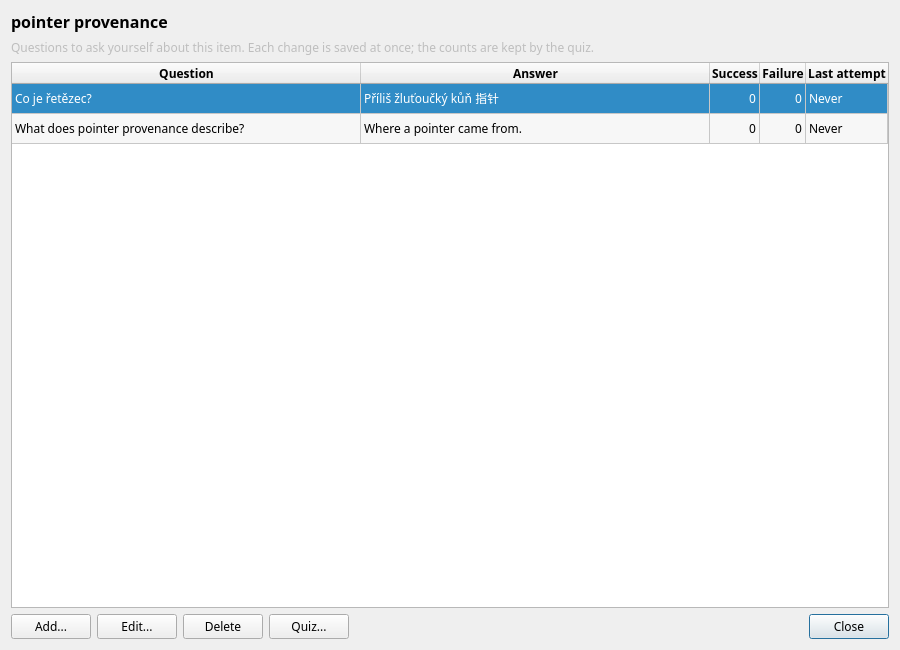
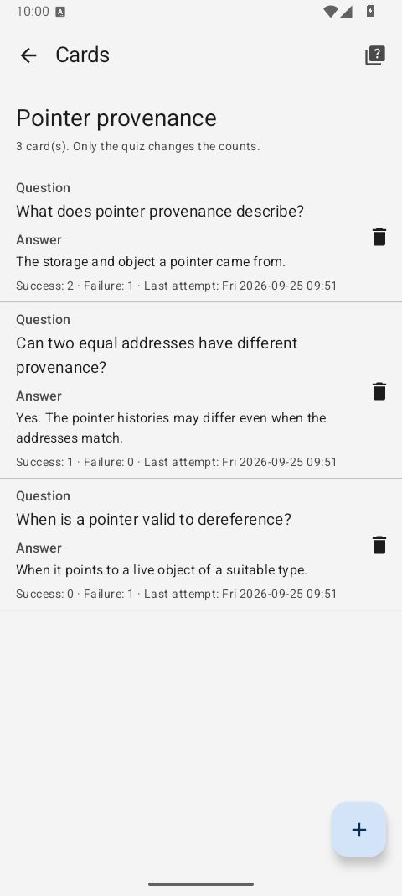
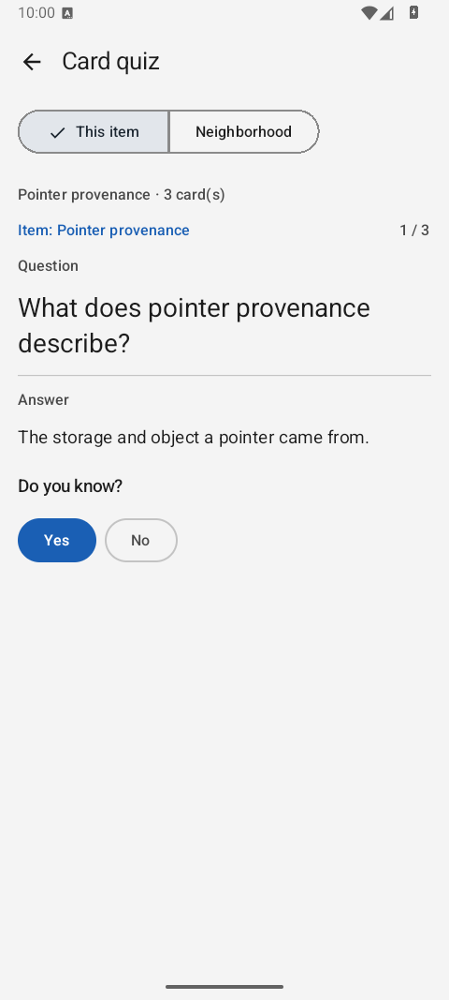

Cards and the card quiz
Add short questions and answers to an item, then test yourself on that item or the concepts linked to it. The same cards and answer counts are available on desktop, web and Android.
Create cards
Save the item first, then open its cards. Each card has a Question and an Answer. Both accept multiple lines of plain text. An item can have any number of cards.
| Client | Open an item's cards |
|---|---|
| Desktop | Select the item and use Manage → Cards of selected item... (Ctrl+K), its table context menu, or Cards... in the item editor. |
| Web client | Select the item and use Manage → Cards of selected item..., Cards in the item preview, or Cards... in the editor. |
| Android | Open the item and tap Cards. |
Use Add to write a question and answer, Edit to change them, and Delete to remove a card. The list shows Success, Failure and Last attempt for each card. These values start at zero, zero and no attempt, and change only when you answer in a quiz. Card changes are saved immediately, independently of the item editor's Save or Cancel. Deleting an item also deletes its cards.

Take a quiz
| Client | Start a card quiz |
|---|---|
| Desktop | View → Card quiz... (Ctrl+Shift+K) for the selected item, its context menu, or Quiz cards in the relationship graph. |
| Web client | View → Card quiz..., Card quiz in the item preview, or Quiz cards in the graph. |
| Android | Card quiz on the item page or Quiz cards in the graph; the Cards screen also has a quiz action. |
- Recall the answer. The quiz shows the source item, progress such as
3 / 17, and the question. - Reveal it. Show answer displays the answer without recording an attempt. On desktop and web,
Spacedoes the same. - Answer honestly. Yes adds one success; No adds one failure. Both update Last attempt and move to the next card. On desktop and web you can use
YorNafter revealing the answer.
At the end, the quiz shows the number of cards and the Yes and No totals for that sitting. Start again loads the current cards for another sitting. Closing before answering a card leaves it unchanged; an empty scope says that no cards are available.


See the screenshot gallery for the desktop and browser quiz windows as well.
Choose the scope
This item quizzes only its own cards. Neighborhood includes the item and the items one, two or three links away, following the same relationship walk as the graph. Starting from Quiz cards in the graph uses its centre and current depth. Each reachable card appears once, even if several paths lead to its item; an item with no cards adds none. For a very large neighborhood, the quiz includes the nearest 150 items and tells you when it has truncated the scope.
Cards and Review
Review asks about an entire item and uses four ratings to change its understanding level and next review date. A card quiz asks a specific question and records only that card's success or failure count. Cards have no due date or spaced repetition schedule; every quiz goes through the cards in its chosen scope. Answering a card does not change the item's Review state, and reviewing an item does not change its cards.
Cards and their attempt statistics are included in a full export. Export format version 2 preserves them when you move a dictionary between installations.